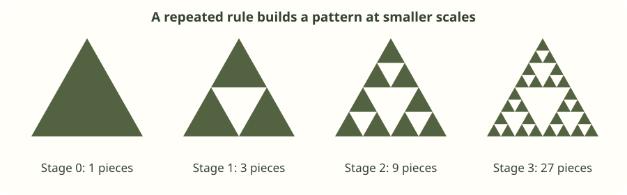

Complexity, Chaos, and Fractals
How much can we predict from a simple rule? Start with calculations that seem easy, notice what becomes surprising, and then give the surprise a mathematical name.
Two neighbors, one rule
Start at 8. If the number is even, divide by two. If it is odd, multiply by three and add one. Repeat until you first reach 1.
8 → 4 → 2 → 1
That took three updates. Now start at 9. Use the exact same rule, and write every value until the first 1. Before doing the work, guess: will 9 take about the same number of updates?
Try it before opening the result. How many updates did 9 require? How high did the sequence climb?
See the completed trajectory
9 → 28 → 14 → 7 → 22 → 11 → 34 → 17 → 52 → 26 → 13 → 40 → 20 → 10 → 5 → 16 → 8 → 4 → 2 → 1. It takes 19 updates and reaches 52. Compare that with just three updates from 8.
One short instruction has produced two very different calculations. This week's theme is the gap between knowing the next step and knowing what repeated steps will do. We will encounter that gap in computation, prediction, and geometry.
How much work will this rule take?
This is the Collatz rule, defined for positive whole numbers:
\[T(n)=\begin{cases}n/2,&n\text{ is even},\\3n+1,&n\text{ is odd}.\end{cases}\]
The values form a trajectory. The stopping time, written \(\tau(n)\), counts the arrows before the first 1, if it is reached. The peak is the largest value visited before that first 1. Do not confuse the number of values with the number of updates.
| Starting number | Updates to first 1 | Largest value (peak) |
|---|---|---|
| 8 | 3 | 8 |
| 9 | 19 | 52 |
| 10 | 6 | 16 |
| 11 | 14 | 52 |
What is the problem? If someone gives you a starting number such as 100, the next step is easy. But the number of updates needed to reach 1 is not obvious just from its size. Nearby inputs do not have to require nearly the same amount of work.
The Collatz conjecture says that every positive integer eventually reaches 1. We can test specific starts; proving something about every positive integer is a different problem. Even millions of successful tests would not prove a statement about infinitely many starts.
Check your understanding. Does knowing \(\tau(8)=3\) help you calculate \(\tau(9)\) without actually performing the updates?
See an explanation
No simple rule for nearby stopping times follows from those values. You still have to calculate or obtain further mathematical information.
Sometimes we can predict the work
Searching a list offers a useful contrast. Checking 32 unsorted names one at a time may require 32 comparisons in the worst case. If the names are sorted and we can eliminate half of the remaining entries at each step, five yes-or-no choices are enough to distinguish 32 possibilities: \(2^5=32\).
Here the workload is easy to anticipate because the structure of the search lets us count the steps. The point of comparing search with Collatz is to ask the same concrete question in each case: how many steps will this computation require? Sorted order is essential for the faster search; it cannot simply be assumed for every list.
What if the starting measurement is slightly wrong?
Suppose a conservation team measures a population as a fraction between 0 and 1. They experiment with the logistic map, a simplified recursive model:
\[x_{n+1}=r x_n(1-x_n).\]
Use the same value of \(r=3.9\) for two almost identical starting measurements, \(x_0=0.4000\) and \(y_0=0.4001\). Each calculation uses its own latest value for the next update.
The first updates are close:
\(x_1=3.9(0.4000)(0.6000)=0.936000\)
\(y_1=3.9(0.4001)(0.5999)=0.936078\)
At this point, would you expect their long-term predictions to stay close? Check the table before deciding.
Exact formulas can still yield uncertain forecasts
| Step | Start 0.4000 | Start 0.4001 |
|---|---|---|
| 0 | 0.400000 | 0.400100 |
| 1 | 0.936000 | 0.936078 |
| 5 | 0.571434 | 0.569296 |
| 10 | 0.121805 | 0.110064 |
| 15 | 0.933177 | 0.637218 |
| 20 | 0.890718 | 0.939083 |
At step 15, the forecasts differ by about 0.296, although their starting measurements differed by only 0.0001. At step 20 the difference is smaller again. The gap does not have to increase at every update.
Try it. Subtract the two entries at steps 10, 15, and 20. If the model described real fish populations, at what point would you ask for a new measurement rather than trusting an old forecast?
For comparison, changing the parameter can change the long-run pattern: at \(r=2.8\), typical trajectories settle toward a fixed value; at \(r=3.2\), they approach two alternating values. The explorer makes this comparison visible. We use the map as a mathematical example, not a calibrated population forecast.
How can removing material make more pieces?
Begin with a line segment of length 1. Remove its open middle third, leaving two segments. Remove the middle third of each surviving segment, and repeat. This is the middle-thirds Cantor construction.
| Stage | Pieces remaining | Length of each | Total remaining length |
|---|---|---|---|
| 0 | 1 | 1 | 1 |
| 1 | 2 | 1/3 | 2/3 |
| 2 | 4 | 1/9 | 4/9 |
| 3 | 8 | 1/27 | 8/27 |
| 4 | 16 | 1/81 | 16/81 |
Count the pieces: they double at every stage. Measure their combined length: it is multiplied by 2/3 at every stage. More pieces can survive even while less total length remains. Each surviving part contains a scaled copy of the entire construction: this is self-similarity.
Try it. Draw stages 0, 1, and 2 on a line. At stage 5, how many pieces would remain, and what fraction of the original length would remain?
Check your results
There are \(2^5=32\) segments, each of length \(1/243\). The total remaining length is \(32/243\). The ideal Cantor set arises by continuing the construction indefinitely.
The Sierpiński triangle asks the same geometric question
Start with a filled equilateral triangle, divide it into four half-size triangles, and remove the middle one. Repeat this on each surviving triangle. The construction is related to the Cantor set, but now we measure area instead of length.

| Stage | Triangles remaining | Fraction of filled area |
|---|---|---|
| 0 | 1 | 1 |
| 1 | 3 | 3/4 |
| 2 | 9 | 9/16 |
| 3 | 27 | 27/64 |
The count triples, while filled area is multiplied by \(3/4\) at each stage. Both the Cantor set and the Sierpiński triangle are examples of fractals, where structure persists at arbitrarily small scales in the ideal infinite construction. We'll discuss the triangle in class; the prequiz and check-in use the simpler one-dimensional Cantor construction.
6. Can something lie between a line and a surface?
For a line segment, doubling the magnification creates two copies of half the size. For a square, doubling the magnification in both directions creates four half-size copies. The Sierpiński triangle produces three half-size copies. Its scaling is between those familiar cases.
| Object | Half-size copies of the whole | Dimension |
|---|---|---|
| Line segment | 2 | 1 |
| Cantor set and Sierpiński triangle | 3 | Approximately 1.585 |
| Filled square | 4 | 2 |
For an exactly self-similar set made from \(N\) non-overlapping copies scaled by \(1/s\), its similarity dimension \(D\) satisfies \(N=s^D\). For the Sierpiński triangle, \(3=2^D\), so
The logarithms are an extension; you do not need to calculate them by hand for the core work. What matters first is the relation between how many copies appear and how much smaller they become. For this ideal construction, the similarity dimension agrees with its fractal (Hausdorff) dimension. Waterloo's mathematical explanation shows the same calculation.
Natural patterns such as coastlines or branching vegetation sometimes show scale-dependent detail, but they are not exact mathematical Sierpiński triangles. Calling something a fractal is a claim about its geometry across scales, not simply a compliment about an intricate picture.
7. What can we calculate, and what remains uncertain?
| Example | What we can calculate | What requires more reasoning |
|---|---|---|
| Collatz | The values, number of steps, and peak for a tested starting integer | Whether every positive integer eventually reaches 1 |
| Logistic map | Updates and differences between two chosen trajectories | Long-term prediction from uncertain initial conditions; identifying chaos |
| Sierpiński triangle | Counts, lengths, and area fractions at finite stages | Describing the infinite-scale limit and its dimension |
The important questions vary with the example. For Collatz, testing many cases cannot substitute for proof of a universal statement. For the logistic map, the formula may be exact while the starting measurement is uncertain. For the Cantor set and the Sierpiński triangle, any finite picture is only one stage of a construction defined by continuing indefinitely.
Complexity, chaos, and fractals can occur together in richer mathematics. Yet none of these words follows automatically from the presence of recursion. A simple savings rule is recursive without being chaotic. A complicated-looking picture is not necessarily fractal. An algorithm may have a short description without having a short running time.
In the Week 10 Explorer, you can investigate all three examples without changing the mathematical questions. The guided lab asks you to produce a short explanation supported by actual computations, and the discussion asks you to distinguish the three concepts for another reader.
References and further work
These sources are optional and expand on the mathematics covered here:
- Terence Tao, Almost all orbits of the Collatz map attain almost bounded values — research on large classes of Collatz trajectories, without proving the full conjecture.
- Robert May, Simple mathematical models with very complicated dynamics — a classic introduction to complicated behavior from simple population rules.
- University of Waterloo, Dynamical Systems and Fractals — the Sierpiński triangle and dimension by self-similarity.